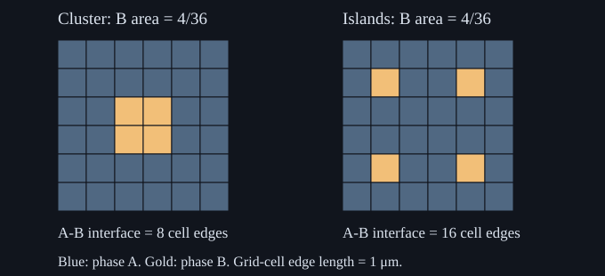

1. Microstructure, phases and composition
A vessel contains 100 g of water and 250 g of sugar. Suppose, for a deliberately stipulated model at fixed temperature and pressure, that the liquid can dissolve at most 220 g of sugar in that water. The vessel is 71.43% sugar by mass. Its liquid is only 68.75% sugar, and 30 g of solid remains. Confusing those two compositions would give the wrong phase amounts before any sophisticated thermodynamic calculation began. Materials calculations need an equally careful distinction between what the whole specimen contains, which phases occur, and how those phases are arranged.
The first substantive recording supplies the topic sequence: micrographs and grains; periodic crystal structure; phase identity; chemical composition; sugar–water examples; processing and microstructure prediction. The mass balances, exact cell counts, synthetic phase maps, code and exercises below are teaching constructions. The sugar capacity is a stipulated number used to reconstruct the lecture's arithmetic, not a verified solubility datum at an unspecified room temperature. The complete recording was locally transcribed in bounded chunks; machine recognition and chunk boundaries remain fallible, and no comprehensive slide or audiovisual audit is claimed.
1.1 What a micrograph describes L1 · 01:11
A material's microstructure is its spatial organization at the scales relevant to the question: the phases present, their shapes and spatial distribution, and, in crystalline material, grains, orientations and interfaces. A grain is a connected crystalline region with a coherent crystallographic orientation, allowing the defects and small orientation variations of a real specimen. A grain boundary separates adjacent grains with differing orientations. A boundary between different phases is instead an interphase boundary; one interface can involve both changes.
Cutting, mounting, polishing and sometimes etching a specimen makes a section accessible to microscopy. The resulting picture is an observation produced by a preparation and imaging method. Contrast can depend on orientation, surface preparation, composition, the detector and the relevant interaction with the specimen. Two shades in an image do not, by themselves, prove two thermodynamic phases. Conversely, two phases need not always be visibly separable with a particular instrument. Phase identification needs suitable structural or chemical evidence as well as the image.
In a single-phase polycrystal, differently oriented grains can share the same crystal structure and equilibrium composition. Counting grains therefore does not count phases. W. C. Carter's MIT notes, Lecture 20, p.125, use this orientation distinction in introducing grain growth. It separates two design changes that would otherwise look similar: changing which phase is stable and changing the grain structure of an already selected phase.
For a minimal mathematical description, choose a bounded specimen region $\Omega$ with positive volume $V$ in m³. Position $\mathbf r$ is measured in metres. For each phase label $\alpha$, define an indicator $\chi_\alpha(\mathbf r)$ that is one inside that phase and zero elsewhere. In this sharp-interface bulk model, interfaces are treated as zero-volume dividing surfaces. Away from them, the phase labels partition the specimen, so $\sum_\alpha\chi_\alpha=1$ almost everywhere: the identity may fail on the zero-volume dividing surfaces without changing a volume integral. Integrating that identity defines the normalized phase volume fractions:
\[ f^V_\alpha=\frac{1}{V}\int_\Omega\chi_\alpha(\mathbf r)\,dV, \qquad \sum_\alpha f^V_\alpha=1. \tag{1.1} \]The superscript $V$ declares the volume basis. A map also needs local composition and, in crystalline regions, orientation. These fields contain more information than the single number $f^V_\alpha$. Two maps can have the same phase fractions and different interface areas, particle spacings or connectivity. Predicting one of those descriptors does not automatically predict the others.
1.2 Periodicity, orientation and the unit cell L1 · 03:35
The course's basic crystalline model is periodic. Let three noncoplanar translation vectors $\mathbf a_1,\mathbf a_2,\mathbf a_3$ generate a lattice. Its translation vectors are $A\mathbf n$, where $A=[\mathbf a_1\ \mathbf a_2\ \mathbf a_3]$ and $\mathbf n\in\mathbb Z^3$ is an integer triple. A finite motif, or atomic basis, specifies positions and species inside a cell. If its fractional positions are $\mathbf b_s$, a periodic atomic pattern has positions
\[ \mathbf r_{\mathbf n,s}=A(\mathbf n+\mathbf b_s). \tag{1.2} \]The index $s$ identifies an atom in the motif. Lattice points organize translation; they are not, in general, a complete list of atomic positions without that motif. The IUCr International Tables, basic concepts, define a unit cell through fractional coordinates in a crystallographic basis. Here the half-open range $0\le b_{s,i}\lt1$ avoids counting a boundary position twice when cells repeat. A real grain has boundaries and defects, so the periodic pattern is a bulk idealization. Aperiodic crystals require a broader treatment and are outside this introductory model.
The cell's six familiar parameters are lengths $a=|\mathbf a_1|$, $b=|\mathbf a_2|$, $c=|\mathbf a_3|$ and angles $\alpha=\angle(\mathbf a_2,\mathbf a_3)$, $\beta=\angle(\mathbf a_1,\mathbf a_3)$, $\gamma=\angle(\mathbf a_1,\mathbf a_2)$. Its volume is $|\det A|$. A cubic conventional cell has $a=b=c$ and three right angles. “Conventional” matters: a convenient symmetry-displaying cell need not be a primitive cell containing one lattice point.
Two simple counts explain the distinction. In a monatomic body-centered cubic, or BCC, conventional cell, eight corner atoms each contribute one eighth, and one body-center atom contributes one. The count is $8/8+1=2$. In a monatomic face-centered cubic, or FCC, conventional cell, eight corners contribute one atom and six face centers contribute half each: $8/8+6/2=4$. Fractions describe sharing in a tiling; they do not mean that physical atoms have been cut into pieces.
Changing grain orientation rotates this pattern relative to the laboratory. A proper rotation $Q$ satisfies $Q^{\mathsf T}Q=I$ and $\det Q=1$, where $I$ is the identity matrix. Replacing $A$ by $QA$ changes laboratory orientation while preserving all vector lengths, mutual angles and cell volume. It therefore need not create a new phase. Rotations that belong to the crystal's own symmetry can describe equivalent orientations; comparing grains rigorously accounts for that equivalence.
An amorphous material lacks the long-range translational order of this model, although its atoms can have important short-range correlations. Glass should not simply be defined as a liquid that has stopped flowing. The IUPAC glass entry places glassy amorphous matter below its glass-transition temperature and explains why it is usually described as a solid. Its relaxation depends on time and temperature. Absence of periodic crystalline order is the distinction needed here; it does not imply absence of all microscopic organization.
1.3 Phase identity requires more than a grain count L1 · 07:29
A phase, in the homogeneous bulk thermodynamic description used here, is material with a specified physical state and composition. The IUPAC phase entry makes uniform composition and physical state central to the definition. Within that idealization, separately located regions may belong to the same phase; an aggregate of a thousand similarly constituted grains need not have a thousand phases. Interfaces, applied-field gradients and nonequilibrium composition gradients require additional qualifications when moving beyond homogeneous bulk states.
Ice and liquid water illustrate why composition alone does not identify a phase. Both can consist of the same water molecules, yet one has an ordered solid structure and the other a liquid structure. The familiar hexagonal ice near ordinary melting conditions is ice Ih; the IAPWS melting and sublimation release treats it separately from other ice forms. Saying that every possible ice structure is hexagonal would lose the pressure-dependent polymorphism that phase diagrams later describe.
Two crystalline phases may have different structures, such as FCC and BCC. They may also share a structure type while differing in composition, ordering or thermodynamic branch. A lattice parameter can vary continuously with composition or strain inside one phase. A change in its numerical value, by itself, is consequently not a universal phase-identification test. Structural symmetry, species occupancy, composition and thermodynamic conditions must be interpreted together.
The phase label $\alpha$ in (1.1) therefore records a physical distinction established by the model and evidence; it is not assigned merely to every colour or every disconnected object. Grain orientation and phase identity are different fields. This distinction will matter when a calculation predicts one stable crystal structure but an experiment reveals many grains of that structure, or when two compositionally distinct regions coexist with the same structure type.
1.4 A composition number must declare its basis L1 · 09:17
Choose the constituents used to describe a material. Let $n_i\geq0$ be their amounts in moles and $m_i\geq0$ their masses in a common mass unit, with positive total amount and mass. Each molar mass $M_i$ below is positive. Their amount fractions and mass fractions are, respectively, $x_i=n_i/\sum_jn_j$ and $w_i=m_i/\sum_jm_j$. Each set sums to one. If $M_i=m_i/n_i$ is the molar mass of constituent $i$, then $m_i=M_in_i$, and substitution gives the conversions
\[ w_i=\frac{x_iM_i}{\sum_jx_jM_j},\qquad x_i=\frac{w_i/M_i}{\sum_jw_j/M_j}. \tag{1.3} \]The denominators perform different normalizations. These formulas apply when the same chosen constituents and molar-mass convention are used consistently. Multiplying a fraction by 100 gives its percentage; it does not remove the need to state the basis. Atomic fraction counts atoms of specified elements, whereas a mole fraction of water molecules and sugar molecules counts different entities.
For pure $\mathrm{H_2O}$, the hydrogen atomic fraction is $2/(2+1)=2/3$. It is not the hydrogen mass fraction. For a teaching calculation, stipulate atomic molar masses $M_H=1\,\mathrm{g\,mol^{-1}}$ and $M_O=16\,\mathrm{g\,mol^{-1}}$. The hydrogen mass fraction is then $w_H=2/(2+16)=1/9$. Thus 66.67 atomic percent corresponds to 11.11 mass percent under those stipulated masses. This is an illustration of basis conversion, not a claim that those rounded values are current metrological atomic weights. Molecular water fraction in a sample of pure water, on the other hand, is one.
There is a second distinction behind the word component. A composition report may list constituent elements, but Thermodynamic components are independent composition coordinates after the relevant constraints are imposed. In a nonreacting water–sugar model, water and sugar provide two independently adjustable amounts. In a pure fixed-stoichiometry water system, elemental counts obey $N_H=2N_O$, so hydrogen and oxygen cannot be varied independently while remaining pure water. It is a one-component phase-equilibrium system despite containing two elements. Elemental analysis and independent-component counting answer different questions.
For $C$ independently variable constituents with only the normalization constraint, $C-1$ fractions specify composition: $x_C=1-\sum_{i=1}^{C-1}x_i$. The allowed vectors occupy a composition simplex, the nonnegative region of the plane $\sum_ix_i=1$. Extra reaction or stoichiometric constraints can lower the number of independent coordinates. The rule must be applied after declaring the model, rather than mechanically counting element names in a chemical formula.
1.5 A solution is one phase over an allowed composition range L1 · 11:51
A compound can have a sharply constrained stoichiometric composition; an idealized line compound is modeled at one composition. Real compounds can admit defects and a finite homogeneity range, so fixed composition is an explicit approximation rather than an absolute dividing line between every compound and solution. A solution is a homogeneous mixture at the molecular or atomic scale. It can have a range of allowed compositions without becoming a mixture of distinct phases.
Dissolving sugar in water below the appropriate saturation limit illustrates a liquid solution. The presence of two chemical constituents does not require two phases. Adding more sugar may change the single liquid's composition while it remains homogeneous. Once the fixed-temperature equilibrium solubility limit is reached, adding further sugar to a model that allows crystalline sugar can leave excess solid together with saturated liquid. Stirring changes the approach to that state; it does not, by itself, define the equilibrium solubility.
Return to the stipulated capacity of 220 g sugar per 100 g water. The saturated liquid has mass $m_L=320$ g and sugar mass fraction $w_L=220/320=0.6875$. This fraction is measured against the mass of the whole liquid, not against the water alone. The ratio 2.2 g sugar per gram water is a solute-to-solvent ratio; 0.6875 is a solute mass fraction. They describe the same stipulated solution with different denominators.
Neither number is supplied as a general room-temperature material property. A real calculation needs an identified sugar species, temperature, pressure, equilibrium phase assumptions, purity and reliable solubility evidence. The role of the numerical example is to expose bookkeeping that remains necessary even after better material data are supplied. Later chapters attach thermodynamic models and assessed parameters to such phase-composition conditions.
1.6 Overall composition and phase composition satisfy a balance L1 · 14:58
The total vessel contains $m_0=350$ g, with overall sugar mass fraction $w_0=250/350=5/7$. Assume no evaporation, reaction or material loss, complete equilibration under the stipulated phase model, and no water incorporated into the pure sugar solid. Then 220 g sugar is in liquid and 30 g remains solid. The solid composition is $w_S=1$, and its phase mass fraction is $f^m_S=30/350=3/35$. Superscript $m$ distinguishes this fraction from the phase volume fraction in (1.1).
The general two-phase balance follows by adding component masses, rather than by reading a diagram mechanically. If phases $L,S$ have masses $m_L,m_S$, their sugar masses are $m_Lw_L,m_Sw_S$. Divide conservation of sugar by total mass $m_0=m_L+m_S$:
\[ w_0=f^m_Lw_L+f^m_Sw_S,\qquad f^m_L+f^m_S=1. \tag{1.4} \]Eliminating $f^m_L$ gives a lever relation whenever $w_S\ne w_L$:
\[ f^m_S=\frac{w_0-w_L}{w_S-w_L}. \tag{1.5} \]For the vessel, $(5/7-11/16)/(1-11/16)=3/35=0.08571429$. The liquid phase fraction is $32/35$. Multiplying these phase fractions by 350 g returns 30 g solid and 320 g liquid. Substitution in (1.4) returns the original 250 g of sugar. This reverse check tests the meaning of every denominator.
The formula also states its boundary. Nonnegative phase fractions require $w_0$ between the endpoint phase compositions. If an input lies outside that interval, negative output is a signal that the assumed two-phase representation is inadmissible, rather than a physical negative mass. If both endpoints have the same composition, (1.4) cannot determine their amounts from composition alone. Ice and liquid water in a one-component system provide that possibility; an energy constraint can then provide information absent from a composition balance.
Volume fraction is not generally interchangeable with mass fraction. If phase densities $\rho_L,\rho_S$ are positive and uniform, with units kg/m³, $m_\alpha=\rho_\alpha f^V_\alpha V$. Dividing by total mass gives
\[ f^m_\alpha=\frac{\rho_\alpha f^V_\alpha} {\sum_\beta\rho_\beta f^V_\beta}. \tag{1.6} \]Two equal phase volumes with densities 2 and 8 in the same density units have mass fractions 0.2 and 0.8. A fraction measured from a section image needs its own stereological assumptions before it can be used as a three-dimensional volume fraction, and then density information before it becomes a mass fraction. The balance basis must follow the measured or computed quantity.
1.7 Phase amounts do not determine a microstructure L1 · 19:58
Consider the two synthetic section maps in Figure 1.1. Each is a six-by-six array of square cells with edge length $\ell=1$ μm. Four cells are phase B and the remaining 32 are phase A. The B area fraction is $4/36=1/9$ in both. In the first map the B cells form one two-by-two cluster; in the second they are four separated islands. These are constructed label fields, not photographs, measured alloys or time-evolving solutions.

The cluster has perimeter $2(2\ell+2\ell)=8\ell$. Each isolated cell contributes $4\ell$, giving $16\ell$ for four cells. Dividing by total section area $36\ell^2$ gives interface-length densities $2/(9\ell)$ and $4/(9\ell)$. Their dimensions are inverse length. These are two-dimensional section descriptors, not asserted three-dimensional interfacial areas or interfacial energies. The calculation proves nonuniqueness of arrangement at a fixed area fraction.
Processing controls which arrangements are accessible. Casting, deformation, welding and heat treatment can change nucleation, growth, redistribution and grain evolution. Thermodynamics constrains preferred states and driving forces under declared conditions; kinetics describes rates and pathways under its own model. Bulk equilibrium phase calculations alone do not specify particle spacing, grain shapes or a complete property prediction. Including interface effects or finite-size constraints changes the thermodynamic model and requires additional inputs.
This distinction explains the course's connection between composition, processing, microstructure and performance. Choosing composition may change stable phases and their amounts. Choosing a process changes the path and the time available for evolution. The resulting spatial organization can affect mechanical or functional response, but a quantitative property calculation still needs an appropriate constitutive relation and parameters. A successful phase balance is one inspectable step in that chain, not a substitute for the whole chain.
1.8 Execute the bookkeeping
The standard-library program uses exact rational arithmetic for the mass fractions, checks both total-mass and sugar conservation, and counts internal A–B edges in the synthetic maps. Its inputs are explicit constants. It reads no files and makes no network requests. It prints counts and fractions; assertions reject an inconsistent construction. The program is available in code/ch01_microstructure.py.
"""Original phase-budget and section-geometry checks; standard library only."""
from fractions import Fraction
water, sugar, capacity = 100, 250, 220
solid = max(0, sugar - capacity)
liquid = water + min(sugar, capacity)
total = water + sugar
w_liquid = Fraction(min(sugar, capacity), liquid)
w_overall = Fraction(sugar, total)
f_solid = Fraction(solid, total)
f_liquid = Fraction(liquid, total)
assert f_liquid + f_solid == 1
assert f_liquid * w_liquid + f_solid == w_overall
assert (w_overall - w_liquid) / (1 - w_liquid) == f_solid
cluster = {(2, 2), (2, 3), (3, 2), (3, 3)}
islands = {(1, 1), (1, 4), (4, 1), (4, 4)}
def boundary_edges(points, size=6):
count = 0
for x in range(size):
for y in range(size):
for dx, dy in [(1, 0), (0, 1)]:
if x + dx < size and y + dy < size:
count += ((x, y) in points) != ((x + dx, y + dy) in points)
return count
assert len(cluster) == len(islands) == 4
assert boundary_edges(cluster) == 8
assert boundary_edges(islands) == 16
print(f"FCC atoms per conventional cell: {8/8 + 6/2:g}")
print(f"BCC atoms per conventional cell: {8/8 + 1:g}")
print("H atomic fraction in H2O:", Fraction(2, 3))
print("H mass fraction for stipulated masses H=1, O=16:", Fraction(2, 18))
print(f"overall sugar mass fraction: {float(w_overall):.8f}")
print(f"liquid sugar mass fraction: {float(w_liquid):.8f}")
print(f"solid sugar mass g: {solid}")
print(f"solid phase mass fraction: {float(f_solid):.8f}")
print(
"section B area fractions:",
Fraction(len(cluster), 36),
Fraction(len(islands), 36),
)
print(
"section interface lengths in cell-edge units:",
boundary_edges(cluster),
boundary_edges(islands),
)
FCC atoms per conventional cell: 4 BCC atoms per conventional cell: 2 H atomic fraction in H2O: 2/3 H mass fraction for stipulated masses H=1, O=16: 1/9 overall sugar mass fraction: 0.71428571 liquid sugar mass fraction: 0.68750000 solid sugar mass g: 30 solid phase mass fraction: 0.08571429 section B area fractions: 1/9 1/9 section interface lengths in cell-edge units: 8 16
Exact rational checks avoid confusing a rounding error with a failed conservation law. The displayed decimal values are summaries of those exact fractions. Counting cell edges proves the stated geometry for these particular maps; it does not validate a model of real microstructure formation.
1.9 Problems with complete solutions
1. One phase, many grains. A specimen contains 100 connected crystalline regions with the same equilibrium composition and structure type, but differing orientations. What follows about its phase count and grain count? What extra evidence would a contrast image require?
Solution
Under the stated model the regions can be 100 grains of one phase. Orientation differences do not require different phase identities. A contrast image alone cannot establish those premises: its brightness may depend on orientation or imaging conditions. Structural and compositional measurements must support a phase assignment. Nor does a disconnected coloured region automatically identify an entire grain; sectioning can split the observed traces of connected three-dimensional objects.
2. Check a conventional cell. Why does an FCC conventional cell contain four atoms in the monatomic model? Does rotating it change that count or its cell volume?
Solution
Eight corners contribute $8(1/8)=1$, and six face centers contribute $6(1/2)=3$, for four atoms. Sharing weights prevent repeated counting across neighboring cells. Under a proper rotation, $A$ becomes $QA$ and $|\det(QA)|=|\det Q|\,|\det A|=|\det A|$. Rotation changes orientation and leaves sharing, count and volume unchanged. This statement does not say that every compound with an FCC Bravais lattice has a one-atom motif.
3. Change the fraction basis. A binary mixture has amount fraction $x_B=1/4$ and stipulated molar masses $M_A=10$, $M_B=30$ in the same units. Find $w_B$ and recover $x_B$.
Solution
Equation (1.3) gives $w_B=(0.25)(30)/[(0.75)(10)+(0.25)(30)]=1/2$. Inverting gives $(0.5/30)/[(0.5/10)+(0.5/30)]=1/4$. Equal masses are compatible with unequal molecular counts because the B entities are three times heavier. Simply relabeling 25 amount percent as 25 mass percent would violate component mass accounting.
4. Add less sugar. Keep 100 g water and the stipulated capacity, but add only 180 g sugar. Find overall composition and solid mass. Why should the saturated-liquid endpoint not be inserted uncritically into (1.5)?
Solution
All 180 g fits within the model capacity, so the liquid mass is 280 g, the sugar fraction is $180/280=9/14$, and solid mass is zero. This overall composition is below the stipulated saturation endpoint $11/16$. Inserting the saturated endpoint and pure solid into a two-phase lever formula would return a negative solid fraction. The calculation signals an incorrect phase assumption: the appropriate state is unsaturated single liquid, whose composition equals the overall composition.
5. Separate composition from phase fraction. In the original vessel, which of $5/7$, $11/16$, $1$ and $3/35$ describes the overall sugar content, liquid sugar content, solid sugar content and solid phase fraction? Recover the two component masses.
Solution
They are, in that order, overall composition, liquid phase composition, solid phase composition and solid phase mass fraction. The liquid fraction is $32/35$. Its mass is 320 g and its sugar mass is $320(11/16)=220$ g. Solid mass is 30 g, all sugar. Sugar totals 250 g; water is $320(5/16)=100$ g. A phase amount and a component concentration are different quantities even when both are dimensionless fractions.
6. Same picture fraction, different mass fraction. Two phases occupy equal volumes, with stipulated densities 2 and 8 g/cm³. What is the mass fraction of the denser phase? What additional assumption is needed if the equal fractions came only from a single section image?
Solution
Take a total volume of 2 cm³, giving one cubic centimetre of each phase. Their masses are 2 g and 8 g, so the denser phase has mass fraction $8/10=0.8$. The total-volume choice cancels in (1.6). A single section's area fractions require a justified representative sampling or stereological relation before being treated as volume fractions. Without it, equal displayed areas alone do not establish equal specimen volumes.
7. Diagnose an incomplete prediction. A calculation returns phase-B fraction $1/9$. Does it determine the interface length in Figure 1.1, grain orientation, a coarsening time or tensile strength?
Solution
No. Both maps have that fraction but different internal interface lengths, $8\ell$ and $16\ell$. Neither map assigns orientation, and the phase fraction contains no kinetic time parameter or mechanical constitutive information. Interface geometry needs additional spatial information, coarsening time needs a kinetic model and parameters, and strength needs a property model and relevant descriptors. The fraction is a useful constraint, but these counterexamples show that it does not uniquely specify the requested outputs.
1.10 What this description establishes
The microscopic description separates phase identity, grain orientation, composition and spatial arrangement. The worked balances determine phase masses only after phase compositions and material conservation are specified. The crystallographic counts apply to explicitly monatomic periodic conventional cells, and the section-map calculation applies to a deliberately constructed two-dimensional field. None provides a universal property law or a validated alloy design.
The next lesson develops composition units, phase classes and chemical order further. Later thermodynamics will determine equilibrium phase conditions; kinetics will constrain how a specimen approaches them. Keeping the descriptive fields and their bases distinct now prevents an attractive phase diagram or solver output from answering a question it has not actually computed.
Sources and provenance
- NPTEL, Prof. K. Guruvidyathri, University of Hyderabad, Essential physical metallurgy concepts 1: Microstructure | Phase. Entire local machine transcript read sequentially; timestamps locate the source spine. Sugar-capacity arithmetic is reconstructed as a stipulated model.
- IUPAC phase and glass: terminology boundaries used above.
- IUCr International Tables, basic concepts: unit-cell and fractional-coordinate convention. The displayed atomic counts and orientation check are derived here.
- W. C. Carter, MIT 3.016 Lecture 20, p.125: grain and orientation distinction.
- IAPWS melting/sublimation release: ice-Ih and other solid-phase boundaries. No phase-boundary calculation is performed here.